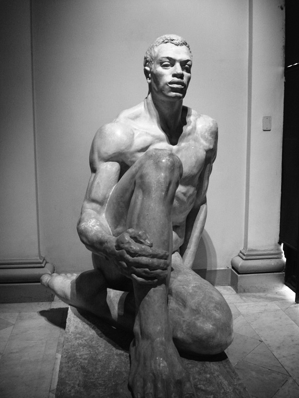

"O Brasileiro" refere-se à obra feita pelo escultor Raphael Galvez em 1937-1940, utilizando gesso, e que foi registrada na Pinacoteca de São Paulo em 2019. A obra foi doada pelo escultor à Pinacoteca e é um exemplo da arte moderna brasileira.